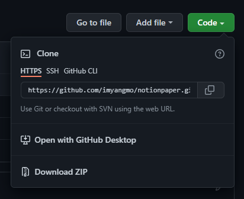
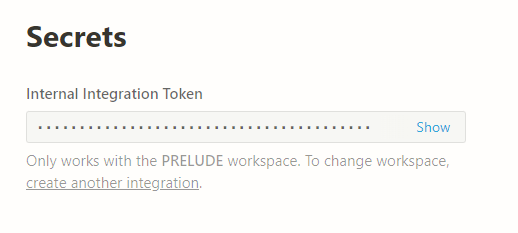
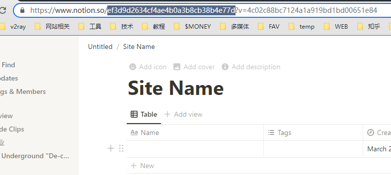

How to use NotionPaper on your computer
Create At: 2022-03-26 00:00:00This guide is meant to help you generate a static site with NotionPaper.
0. Prerequisites
- Windows 10 / 11 (did not tested on other versions or platforms)
- Node 16.16 (did not tested on other versions)
- Git (not required)
1. Clone the repo
If you already know how to use git, then clone this repo:
https://github.com/imyangmo/notionpaper.gitIf you don’t, go to this page, then download this repo as a compressed file, then decompress it to a folder.
2. Install dependencies
Go to the folder that you cloned / decompressed, run:
node i3. Apply for Notion Intergrations
Go to https://www.notion.so/my-integrations, click “New Intergration” button, specify the “Name” and “Associated Workplace” (where you keep your contents), the click submit.
An internal intergration is okay to use.
After that, you will see a “Secrets” section, click “Show”, then copy that token to a place where is safe.
4. Setup a Notion database
You could choose either one of the following method.
4.1 The easy way
Duplicate this template to your workspace:https://cheddar-vest-7d3.notion.site/7ddce658b55544a1a1b82b06026c6860?v=aa4be226ef444a599ab60e992081a781
4.2 The manual way
Go to the workplace where your intergration was associated,
- Create a new empty page, then create a block as a full page database
- Fill up the page title, where will be used as your site name
- Besides “Name” and “Tags” column, add three more columns as:
- Name: Create Time, type as “Created Time”
- Name: Update Time, type as “Last Edited Time”
- Name: Original Create Time, type as “Date” with time
Final table looks like this:
Remeber the page id, in url looks like this (the string after “notion.so/” and before “?v=”):
5. Setup the configuration file
Go to your folder “src/”, open “config.ts” with any text editor:
- DATABASE_ID : the page id of your database where you get from step 4
- NOTION_TOKEN: the token you get from step 3
export const DATABASE_ID = 'xxxxx';
export const NOTION_TOKEN = 'secret_xxxxx';
export const NOTION_VERSION = '2022-02-22';
export const NOTION_API_BASE_URL = 'https://api.notion.com/v1/';
export const GOOGLE_ANALYTICS = 'UA-xxxxxxx-3';6. Run the script
Inside the folder, run:
npm run build7. Deploy
If everything went great, you will find your site at “/dist” folder.
Now you could deploy your site to any hosting services now.